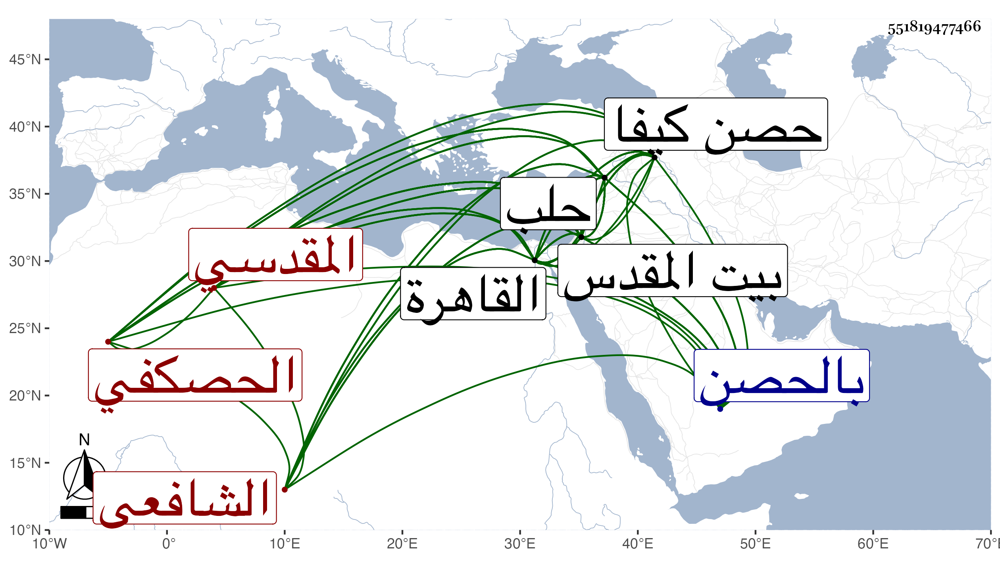

0902Sakhawi.DawLamic.ITO20230111-ara1.EIS1600.551819477466
Biography ID: 551819477466
577
محمد بن علي بن منصور بن زين العرب أبو اللطف الحصكفي ثم المقدسي الشافعي ويعرف في بلاده بابن الحمصي وفي هذه النواحي بكنيته . ولد في سنة تسع عشرة وثمانمائة بحصن كيفا من بلاد بكر ونشأ بها فقرأ القرآن عند النجم العجمي المراغي وتلا به عليه لعاصم ونافع وابن كثير وكذا على ابن المصبر ، وحضر عند الزين عبد الرحمن بن الحلال بالمهملة ثم التشديد واستفاد من قراءة الناس عليه وأخذ النحو والصرف عن الجلال بن الحلوائي الحاج زين الدين عبد الرحمن قاضي الحصن وعنه أخذ المنطق وكذا أخذه مع العروض والقوافي عن الخطيب الجمال حسن بن قاضي القضاة بالحصن النور على الشافعي والمنطق عن سراج الرومي ببيت المقدس والكافياجي بالقاهرة مع سماع قطعة صالحة من شرح العضد على المختصر بل قرأ عليه موقفين من شرح المواقف للسيد وعلم الهيئة والهندسة والحساب والحرف عن المفنن قوام الدين الشيرازي والموسيقى عن الحاج قلندر بحصن كيفا والحاج زين الدين طاهر بن قاضي الموصل قرأ عليه الأدوار للصفي عبد المؤمن الأرموي قراءة متقنة والمعاني والبيان والبديع عن العلاء علي الكردي مدرس السفاحية بحلب وغيره والفقه عن عبيد البابي إمام الجامع الكبير بحلب والزين ماهر ببيت المقدس وعنه أخذ الفرائض والحساب وكذا أخذ الفقه مع الأصلين والنحو والتفسير والحديث والتصوف عن الشهاب بن رسلان وهو أجل شيخ لازمه ، وسمع بحلب على حافظها البرهان وبالقدس على الشمس بن المصري والشهاب بن حامد وعائشة الكنانية والتقي القلقشندي وبالقاهرة عن شيخنا ولازمه ومدحه بقصيدة طنانة كتبت منها في الجواهر . وأجاز له الشمس العصيري وآخرون ، وكان قدومه حلب في سنة خمس وثلاثين ثم رجع إلى بلاده ثم عاد إليها سنة ثمان أو تسع وثلاثين ثم تحول منها إلى القدس فقطنه ، وحج ودخل القاهرة غير مرة واستقر معيدا بصلاحية المقدس ، ولقيته بالقاهرة ثم به وأكرمني بنثره ونظمه وسمع بقراءتي ، وكان فاضلا مشاركا في الفضائل بديع الخط بهج التذهيب فائق التجليد متميزا في كثير من الصنائع العجمية شجي الصوت مطربه عالما بذلك متقدما في فنون الأدب عالي النظم له قصائد ومقاطيع ، كل ذلك مع لطف الذات وحسن المحاضرة وجميل العشرة وفصاحة العبارة بحيث كان مجموعا فائقا ونوعا رائقا عمل مؤلفا في ذبائح أهل الكتاب ومناكحتهم سماه رفع الحجاب عن مناكحة أهل الكتاب في كراسين أجاد فيه إلى الغاية وتحقيق الكلام في موقف المأموم والأمام وشجرة في علم النحو بديعة الوضع وأخرى في الصرف ابدع منها ، كتبت عنه من نظمه أشياء . منها قوله :
| إجعل شعارك حيث ما كنت التقى | قد فاز من جعل التقى إشعاره |
| واسلك طريق الحق مصطحبا به | إخلاص قلبك حارسا أسراره |
| وإذا أردت القرب من خير الورى | يوم القيامة فاتبع آثاره |
وقوله :
| عليك بإخفاء السلوك لدى الورى | لتأمن من شر الريا وعنائه |
| وعند الصفا خالطهم كيف ما تشا | بحق فلون الماء لون إنائه ومن نظمه : |
| ليس السواد بوجنتيه عارض | حتى يلوم على هواه اللاحي |
| بل ذاك ظل الحاجبين تعارضا | في نور شمس جبينه الوضاح |
مات في ليلة الثلاثاء عاشر جمادى الآخرة سنة تسع وخمسين بعد انفصالي عنه بيسير وتأسفت على فقده رحمه الله وإيانا . قال ابن أبي عذيبة ولا أعلم بهذه البلاد من يدانيه في حسن النظم والنثر والتمكن من علم الأدب وقال أنه أخذه ببلاده عن خاله علي بن مشرف مع لطافة الشكل وحسن الملتقى وحلاوة اللسان والكرم والدين استقر في إعادة كبرى بالصلاحية وأفتى ودرس وانتفع به جماعة وتصدر بالمسجد الأقصى تلقاها مع الإعادة عن العماد بن شرف بعد موته بزيادة معلوم ، وكان أبوه تاجرا في القماش . مات بالقدس سنة خمس وخمسين وخلف له ثروة .
